Varie funzioni pre-gara¶
Questa sezione descrive varie funzioni utili nei giorni precedenti la gara.
Cartine¶
Calcola il numero di cartine necessarie¶
Il numero di cartine necessarie per ogni categoria è dato da:
- Numero di iscritti
- Numero di vacanti previsti
- Cartine supplementari richieste con l'iscrizione
- Riserva (di solito 1)
Per ottenere il numero di iscritti per categoria, compresi i vacanti:
- Nel menu
IscrizioniselezionaRiassunto delle iscrizioni > Categorie
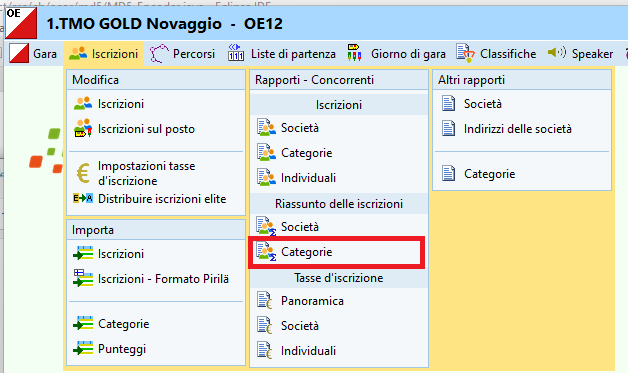
Per ottenere il numero di cartine supplementari richieste ad esempio dagli iscritti nelle categorie OK, H/DB e H/D10-12-14, procedere a dipendenza del sistema di importazione delle iscrizioni utilizzato.
Iscrizioni importate direttamente da OL-Events
Purtroppo la procedure di importazione automatica tra OE12 e OL-Events non è (ancora) in grado di importare anche il numero di cartine supplementari.
- In OL-Events, esporta le iscrizioni come file CSV per OE12 (vedi Esportazioni in OL-Events)
- Il file viene salvato nella cartella di default dei download col nome data_export_OE12_numeroGara.csv (ad esempio
10_03_2023_export_OE12_175.csv) - Apri il file con Excel
-
Seleziona la prima colonna premendo sull'intestazione
A
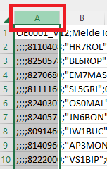 -
Nel menu
DataselezionaText to Columns(identifica la voce corretta se usi Excel in italiano...)
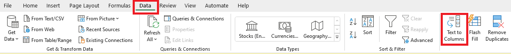 -
Seleziona
DelimitedeNext >
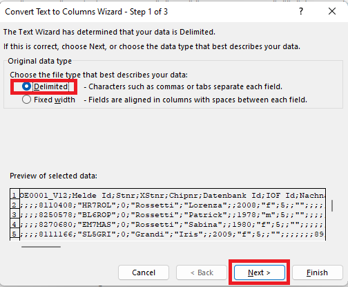 -
Seleziona il separatore
Semicolon(Punto e virgola) eFinish
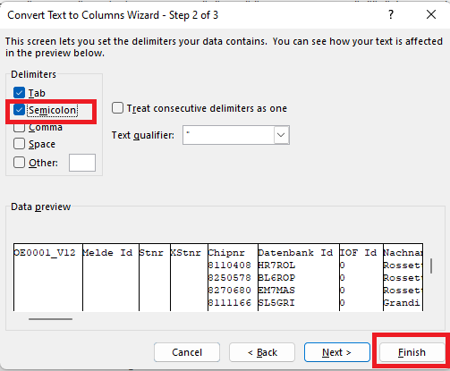Se ti appare un messaggio che dice
ci sono già valori in questi campi:- Esci da Excel senza salvare
- Apri il file con un editor di testo (ad esempio Notepad++, Notepad ma NON Word o simili)
- Cerca tutte le virgole e cancellale (dovrebbero essere solo 1-2 usate negli indirizzi come separatori tra la via e il numero civico)
- Salva il file e ricomincia da capo aprendolo in Excel
-
Seleziona tutta la tabella cliccando sul triangolo verde a sinistra dell'intestazione della prima colonna
Ae sopra l'intestazione della prima riga1
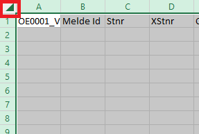 -
Nel menu
DataselezionaFilter
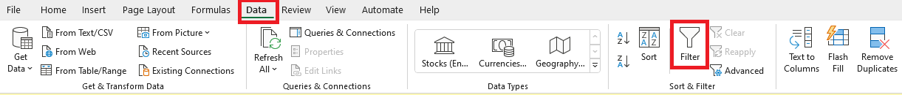 -
Nella colonna
Text3, apri il filtro (triangolino verso il basso) e seleziona unicamente i campi con le cartine supplementari
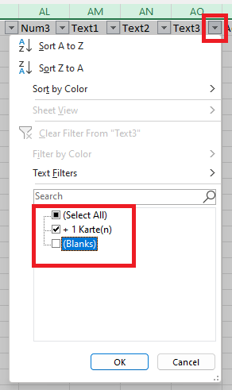 -
Conta il numero di cartine richieste per ogni categoria
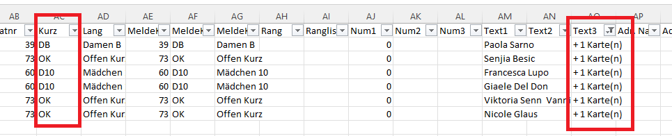
Iscrizioni importate con file CSV
Sia OL-Events che GO2OL esportano il numero di cartine supplementari in uno dei campi Testo1, Testo2, Testo3 o Num1, Num2 o Num3.
- Nel menu
IscrizioniselezionaModifica > Iscrizioni - Seleziona il tab
Concorrenti -
Se non sono visibili, aggiungi alla tabella le colonne
Testo#eNum#
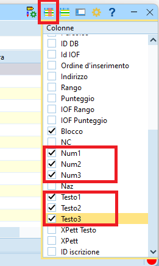 -
Ordina alfabeticamente ognuna delle colonne aggiunte per trovare i valori desiderati.
Nota: nell'esempio una gara importata da OL-Events in formato OE12 con le cartine nel campoTesto3e i concorrenti in coppia nel campoTesto1
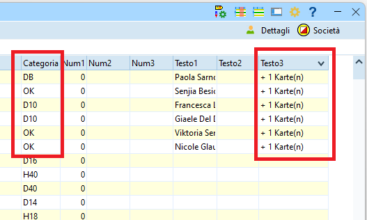 -
Conta il numero di cartine richieste per ogni categoria
Iscrizioni gestite manualmente
Avendo gestito manualmente le iscrizioni, sicuramente hai a disposizione i dati relativi alle cartine supplementari richieste.
Stampa etichette per cartine¶
-
Nel menu
IscrizioniselezionaIscrizioni > Categorie
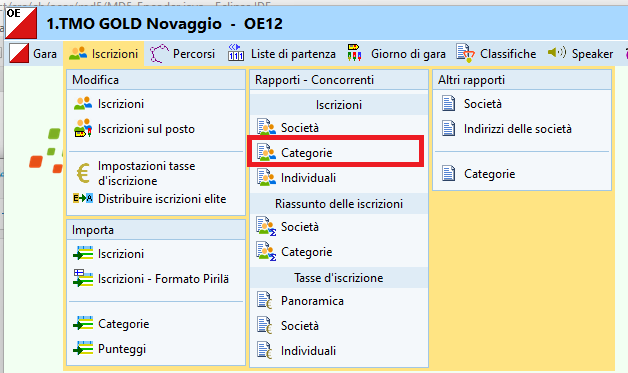 -
Eventualmente, nel pannello in basso, seleziona una categoria con pochi concorrenti per la prova di stampa
-
Seleziona il modello
TMO Etichetta CartinaeEtichette
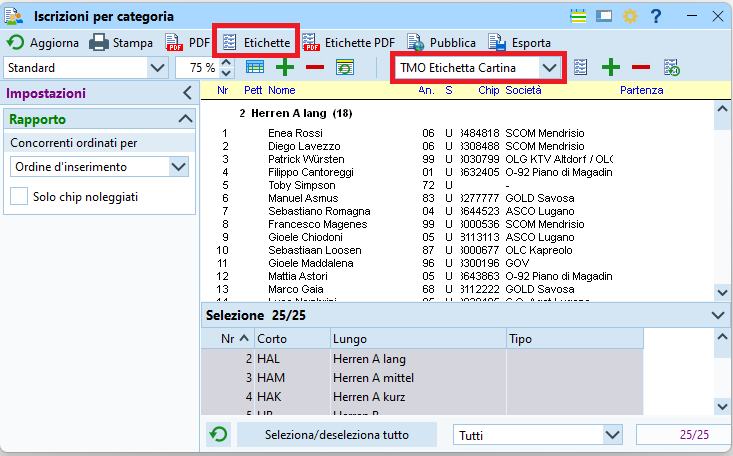 -
Nel pannello di stampa, specifica quante etichette ci sono su un foglio A4
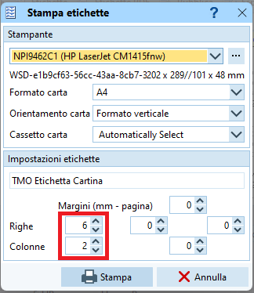 -
Se la stampa è soddisfaciente e i campi stampati sono all'interno delle etichette, seleziona tutte le categorie e stampa le etichette di tutti i concorrenti
Gestione finanziaria¶
Per contenere i costi del servizio del portale d'iscrizioni OL-Events, i pagamenti delle tasse d'iscrizione non vengono gestite dal portale.
Dopo la gara l'organizzatore spedisce il dettaglio delle iscrizioni (quindi incluse le iscrizioni sul posto) con la fattura a tutte le società ticinesi.
La procedura d'incasso per le società non ticinesi non è specificata: possibili opzioni sono ad esempio il pagamento all'info il giorno di gara o la fattura come le società ticinesi.
Per l'incasso all'info il giorno di gara, stampa i dettagli per le società non ticinesi già il giorno prima. Vedi i dettagli in Finanze.
Copia di sicurezza¶
In ogni momento della gestione di una gara è possibile e consigliabile creare copie di sicurezza.
-
Seleziona
Gara > Copia di sicurezza
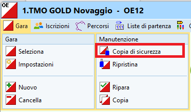 -
Premi il bottone
Crea automaticamente il nome del file
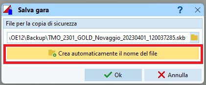- Nota: OE crea il nome aggiungendo data e ora al nome della cartella della gara.
- Nota: Le copie di sicurezza sono salvati nella cartella
C:\SportSoftwareV12\OE12\Backupcon l'estensione.skb
-
Premi
OKper lanciare il salvataggio della gara - Conferma
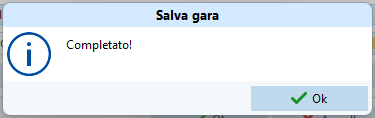
Per ripristinare una copia di sicurezza:
-
Seleziona
Gara > Ripristina
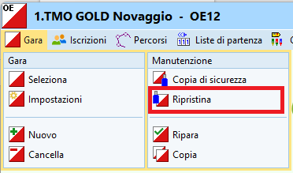 -
Riempi i vari campi
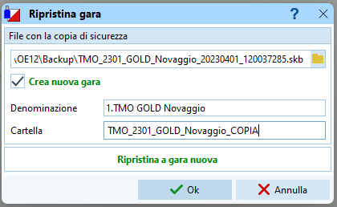- Seleziona il file della copia di sicurezza
- Imposta
Crea nuova garaper non sovrascrivere quella attuale - Imposta la cartella in cui importare la gara
-
Premi
OK
Nota: Se hai ripristinato i dati in una nuova gara, la nuova gara è selezionata automaticamente come gara attuale.
Copia la gara sui PC ASTI¶
Spesso le gare vengono preparate su PC personali, mentre il giorno di gara vengono normalmente utilizzati i PC ASTi.
Copia tutta la cartella di gara dal PC di preparazione al server di gara
- Chiudi il programma OL-Einzel OE12
- Con Windows Explorer, copia la cartella di gara
Nota: la gara si trova inC:\SportSoftwareV12\OE12\EventData - Incolla la cartella di gara
unicamentesul PC ASTI che funge da server (il PC 4).